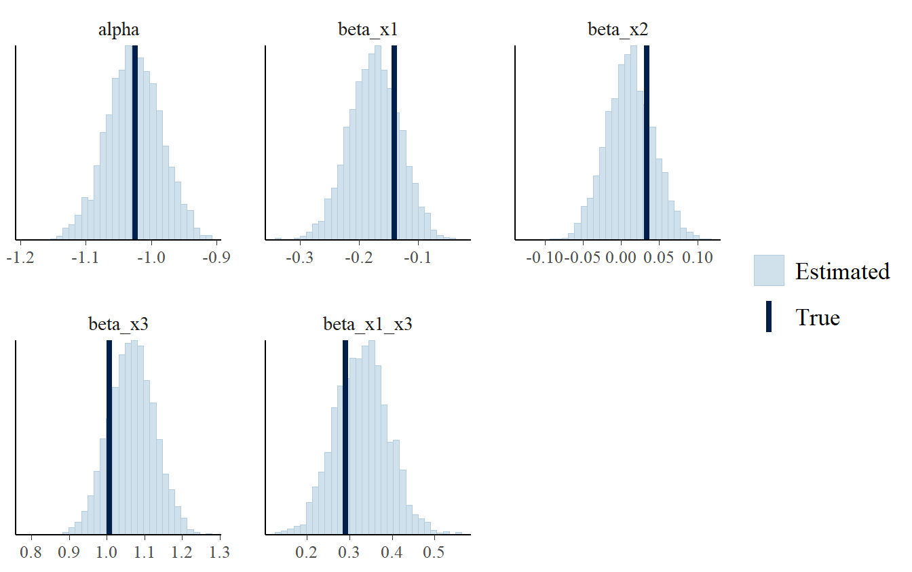

Day 5 Model comparison
How can we compare more fitted model to choose which model to use to support the decision making process?
We want to assess how the models predict outcome values with new values. The most common approach involves training a model on a set of data (training set) and validating the model on other set of data (validation set) on which we evaluate the predictive performance.
In most situations we want to decide which model to use before collecting new data that can be used for model validation. In such situations, we can make some assumptions on the performance of the models if we would collect new data. We can make some assumptions on predictive density, which measures how surprisingly the data are compare with our model. Basically, when we have a new data point, the model tells us how the new value is reasonable given model assumptions. If we have new data, we can evaluate the average reasonability of the data given our model.
We can get some measure performance even if we don’t have a new data. We can define a measure of predictive accuracy for the \(n\) observed data, which we will call Expected Log Pointwise Predictive Density (ELPD):
\[ \sum_{i = 1}^{n} \int p_{t} \left( \tilde{y_{i}} \right) p \left( \tilde{y_{i}} \vert y_{i} \right) d \tilde{y_{i}} \]
where \(p_{t} \left( \tilde{y_{i}} \right)\) is the distribution of the true data generating process and \(p \left( \tilde{y_{i}} | y_{i} \right)\) is the log predictive density. Obviously, \(p_{t} \left( \tilde{y_{i}} \right)\) is unknown, so we need to approximate it using WAIC or cross-validation.
On the observed data, we can compute the Log Pointwise Predictive Density (LPD) as follows:
\[ \sum_{i = 1}^{n} \log p \left( y_{i} \vert y \right) = \\ \sum_{i = 1}^{n} \log \int p \left( y_{i} \vert \theta \right) p \left( \theta \vert y \right) d \theta \] In practice, the LPD can be computed by evaluating the its expectation over the posterior draws of \(\theta\). Denoting with \(S\) the samples drawn from the posterior:
\[ \widehat{LPD} = \sum_{i = 1}^{n} \log \left( \frac{1}{S} \sum_{s = 1}^{S} p \left( y_{i} \vert \theta_{s} \right)\right) \]
Of course, the LPD on the observed data will overconfident, because it is computed on the same set of observations used to train the model.
The face the issue of overconfidence with prediction on the training set, we can use the Leave-One-Out Cross-Validation (LOO-CV). Basically it consists of training the model on all the observed data but one. The left observation is used as validation set. The operation is repeated for all the data points and then the individual log posterior density is summed across the observations. The Bayesian LOO-CV can be formalized as follows:
\[ ELPD_{loo} = \sum_{i = 1}^{n} \log p \left( y_{i} \vert y_{i - 1} \right) \]
where
\[ p \left( y_{i} \vert y_{i - 1} \right) = \int p \left( y_{i} \vert \theta \right) p \left( \theta \vert y_{i - 1} \right) \]
We can compare the difference of ELPD between two models on the data points to check how the models measure the plausibility of each data points and how the models predict the data points (maybe a model is able to better predict some data points than the other).
The problem is that if the model is slow or if we have a lot of data points, fitting \(n\) models is not feasible. How can we compute LOO-CV without fitting \(n\) models?
We can approximate LOO-CV performance as follows:
fit the model once and then use Pareto Smoothed Importance Sampling (PSIS-LOO)
A weight is associated to each observation and it measures the importance of the observation in the computation of the posterior of the parameters of the model. A Pareto distribution is then fitted to the distribution of weights.
The largest weights with order statistics with Pareto distribution are replaced.
We assume that the posterior is not highly sensitive to leaving out a single data point.
How would we know if such an assumption holds? Maybe there are some observations which are relevant for the model.
Based on the estimate of the shape parameter (\(k\)) of Pareto distribution we can know if such assumption holds.
For larger values of \(k\) the loo package gives some warnings, telling us that some observations are very important for the model and the posterior may be sensitive if leaving out those observations.
If warnings are thrown out by the package, it means that PSIS is not reliable in such situation.
For the problematic observations we can compute the LPD exactly by fitting the model to all the other data and evaluate the elpd on the particular observations.
Models are then compared by looking at their ELPD. The one with higher value is the one that should be preferred in terms of predictive performance. For further details on the use of LOO-CV we remind the reader to the study of Vehtari et al. (2017) .
We will show how perform Bayesian model comparison using loo R package. The demonstration will be implemented on some fake data in we will use a logistic regression to model the prediction of an hypothetical event.
First we define the parameters of the data generating process.
# Consider a model with 2 continuous variables, one binary variable
# and interaction between the binary and one of the two continuous
# variables
# Number of observations
n <- 5000L
# Number of coefficients
k <- 5L
# Define the vector of parameters
beta_vector <- c(
-log(2.5), # intercept
log(0.8), # x1 (cont)
log(1.1), # x2 (cont)
log(2.2), # x3 (binary)
log(1.5) # x1*x3
)
# Alternative code to generate data with R
# # Generate matrix of covariates
# des_mat <- data_frame(
# x1 = rnorm(n = n, mean = 0, sd = 1),
# x2 = rnorm(n = n, mean = 0, sd = 1),
# x3 = rbinom(n = n, size = 1, prob = 0.4)
# ) %>%
# model.matrix(
# ~ x1 + x2 + x3 + x1:x3,
# data = .
# )
#
# # Linear predictor
# eta <- des_mat %*% beta_vector
#
# # Transform on probability scale
# prob <- 1/(1 + exp(-eta))
#
# # Get the outcome variable
# y <- rbinom(n = n, size = 1, prob = prob)
#
# # Get the proportion of events
# table(y)Here’s the Stan program to generate fake data from the prior predictive distribution.
// Logistic regression Data Generating Process
data{
int<lower = 1> N; // number of observations
int<lower = 1> K; // number of coefficients
vector[K] beta; // coefficients
}
parameters{
}
model {
}
generated quantities {
// Declare simulated variables
vector[N] x1;
vector[N] x2;
int<lower = 0, upper = 1> x3[N];
int<lower = 0, upper = 1> y[N];
// Generate parameters value from the prior predictive distribution
// (try a t_student)
real alpha = student_t_rng(7, beta[1], 0.1);
real beta_x1 = student_t_rng(7, beta[2], 0.1);
real beta_x2 = student_t_rng(7, beta[3], 0.1);
real beta_x3 = student_t_rng(7, beta[4], 0.1);
real beta_x1_x3 = student_t_rng(7, beta[5], 0.1);
// Declare linear predictor
real eta;
// Generate simulated values of the outcome
for (n in 1:N) {
// Generate covariates
x1[n] = normal_rng(0, 1);
x2[n] = normal_rng(0, 1);
x3[n] = bernoulli_rng(0.4);
// Linear predictor
eta = alpha +
beta_x1 * x1[n] +
beta_x2 * x2[n] +
beta_x3 * x3[n] +
beta_x1_x3 * x1[n] * x3[n];
y[n] = bernoulli_logit_rng(eta);
}
}
Now let’s compile the model and sample from the prior.
# List of data to pass to Stan
fake_list <- list(
N = n,
K = k,
beta = beta_vector
)
# Compile the data generating process model
logit_dgp_comp <- stan_model(
file = "stan_programs/loo_logit_dgp.stan"
)
# Sample to get fake data
samps_logit_dgp <- sampling(
object = logit_dgp_comp,
data = fake_list,
chains = 1L,
cores = 1L,
iter = 1L,
algorithm = "Fixed_param",
seed = mcmc_seed
)#>
#> SAMPLING FOR MODEL 'loo_logit_dgp' NOW (CHAIN 1).
#> Iteration: 1 / 1 [100%] (Sampling)
#>
#> Elapsed Time: 0 seconds (Warm-up)
#> 0 seconds (Sampling)
#> 0 seconds (Total)# Get fake data
fake_data <- rstan::extract(samps_logit_dgp)
# Store fake data into a list
fake_data_list <- list(
N = n,
K = k,
beta = beta_vector,
x1 = fake_data$x1[1, ],
x2 = fake_data$x2[1, ],
x3 = fake_data$x3[1, ],
y = fake_data$y[1, ]
)We now fit the full model to check if we can recover the parameter values of the data generating process. The Stan program of the full model is as follows:
// Logistic regression full model
data{
int<lower = 1> N; // number of observations
int<lower =1> K; // number of coefficients
vector[K] beta; // vector of coefficients
vector[N] x1; // continuous predictor
vector[N] x2; // continuous predictor
vector<lower = 0, upper = 1>[N] x3; // binary predictor
int<lower = 0, upper = 1> y[N]; // outcome
}
parameters {
real alpha;
real beta_x1;
real beta_x2;
real beta_x3;
real beta_x1_x3;
}
model {
// Linear predictor
vector[N] eta;
// Prios
target += student_t_lpdf(alpha | 7, beta[1], 1) +
student_t_lpdf(beta_x1 | 7, beta[2], 1) +
student_t_lpdf(beta_x2 | 7, beta[3], 1) +
student_t_lpdf(beta_x3 | 7, beta[4], 1) +
student_t_lpdf(beta_x1_x3 | 7, beta[5], 1);
// Linear predictor
eta = alpha +
beta_x1 * x1 +
beta_x2 * x2 +
beta_x3 * x3 +
beta_x1_x3 * x1 .* x3;
// Likelihood
target += bernoulli_logit_lpmf(y | eta);
}
generated quantities{
vector[N] y_rep; // replicated data
vector[N] log_lik; // pointwise log likelihood for LOO-CV
for(n in 1:N) {
real eta_rep = alpha +
beta_x1 * x1[n] +
beta_x2 * x2[n] +
beta_x3 * x3[n] +
beta_x1_x3 * x1[n] * x3[n];
y_rep[n] = bernoulli_logit_rng(eta_rep);
log_lik[n] = bernoulli_logit_lpmf(y[n] | eta_rep);
}
}
In the generated quantities we store the log lik vector. It contains the log predictive pointwise density of the observed data, which we will use later to compute the ELPD using the LOO-CV.
# Compile the full model
full_logit_comp <- stan_model(
file = "stan_programs/loo_logit_full_model.stan"
)
# Sample from the posterior
fitted_full_logit <- sampling(
object = full_logit_comp,
data = fake_data_list,
warmup = 1000L,
iter = 2000L,
chains = 4L,
seed = mcmc_seed
)
# Get the posterior of the parameters
post_alpha_betas <- as.matrix(
fitted_full_logit,
pars = c(
"alpha",
"beta_x1",
"beta_x2",
"beta_x3",
"beta_x1_x3"
)
)
# Get the parameter values of the data generating process
true_alpha_beta <- c(
fake_data$alpha,
fake_data$beta_x1,
fake_data$beta_x2,
fake_data$beta_x3,
fake_data$beta_x1_x3
)
# Plot the true values
mcmc_recover_hist(
x = post_alpha_betas,
true = true_alpha_beta
)
The model seems to be able to recover the parameters of the data generating process.
We will compare 3 models:
- A model with only continuous variables
- A model with continuous variables and the binary variable
- The full model
We will compile the first two models and we will sample from their posteriors. The full model has been already compiled and we have already sampled from its posterior.
# Compiles the models
logit_1_comp <- stan_model(
file = "stan_programs/loo_logit_model_1.stan"
)
logit_2_comp <- stan_model(
file = "stan_programs/loo_logit_model_2.stan"
)
# Sample from their posteriors
fitted_logit_1 <- sampling(
object = logit_1_comp,
data = fake_data_list,
warmup = 1000L,
iter = 2000L,
chains = 4L,
seed = mcmc_seed
)
fitted_logit_2 <- sampling(
object = logit_2_comp,
data = fake_data_list,
warmup = 1000L,
iter = 2000L,
chains = 4L,
seed = mcmc_seed
)We can now extract the LPD for each model and compute ELPD with LOO-CV with PSIS.
# Extract lpd of each model
log_lik_1 <- extract_log_lik(
stanfit = fitted_logit_1,
merge_chains = FALSE
)
r_eff_1 <- relative_eff(exp(log_lik_1))
log_lik_2 <- extract_log_lik(
stanfit = fitted_logit_2,
merge_chains = FALSE
)
r_eff_2 <- relative_eff(exp(log_lik_2))
log_lik_full <- extract_log_lik(
stanfit = fitted_full_logit,
merge_chains = FALSE
)
r_eff_full <- relative_eff(exp(log_lik_full))
# Compute ELPD for each model with LOO-CV
loo_1 <- loo(log_lik_1, r_eff = r_eff_1)
loo_2 <- loo(log_lik_2, r_eff = r_eff_2)
loo_full <- loo(log_lik_full, r_eff = r_eff_full)Now we compare the first two models.
# Model 1 and 2
compare(loo_1, loo_2)#> elpd_diff se
#> 155.7 17.5As we expected, ELPD is higher in the second model, because we are modeling the outcome with one more predictor which we imposed to be a strong one. Let’s now compare the second and the full model.
compare(loo_2, loo_full)#> elpd_diff se
#> 13.3 5.3The full has higher ELPD because we included the interaction term.